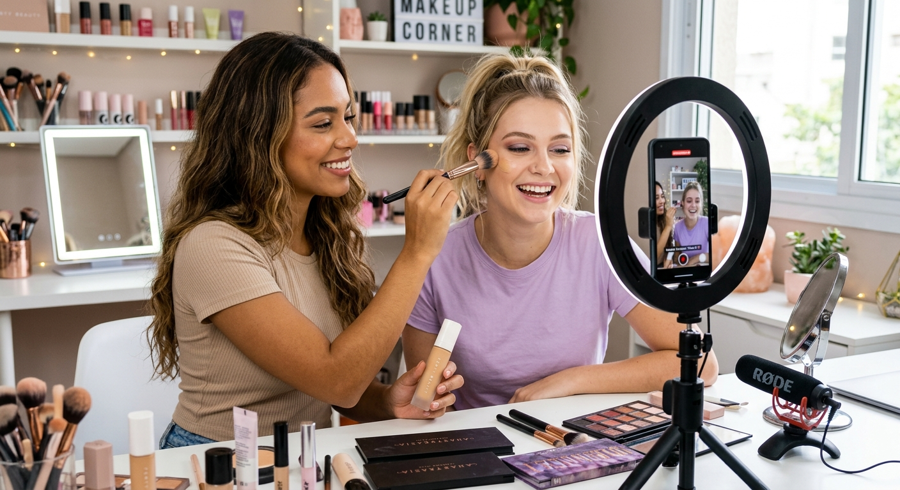

Meu primeiro post do meu blog
Seja bem-vindo ao meu blog de como fazer uma maquiagem basica
por:Vitoria
Seja bem-vindo ao meu blog de como fazer uma maquiagem basica
por:Vitoria

Cada traço é um aprendizado e a sua beleza é única: não tenha medo de errar, a prática constrói a sua melhor versão!
por:Vitoria